PySoy level editing with Blender
This tutorial explains the different aspects of how to create a level for PySoy by using Blender and the soy_export.py script. It assumes some at least basic knowledge of how to create models in Blender. You should already be familiar with concepts such as Scenes, Objects, Meshes, Materials and Textures.
Single Model Export
We will start from the easy end. The script contains two ways of exporting stuff. Level export and single model export. The simplest one being single model export.
What we want to do here, is create a single model which can be linked in and reused any number of times in a level. Single models should be contained in files separate from the levels. Step one in this process is creating the model, obviously. I assume you know how to do this, so we'll just fast-forward to step two. To make linking possible, we will be making use of a wonderful new feature the Orange Movie team came up with: Grouping. Basically, you can create a Group consisting of a number of Objects. You can then link the data in group-wise and instantiate any number of Objects making use of the groups. This is immensely useful for level-editing, as we will see later. But first, let's try to create a Group from a model. It's very easy.
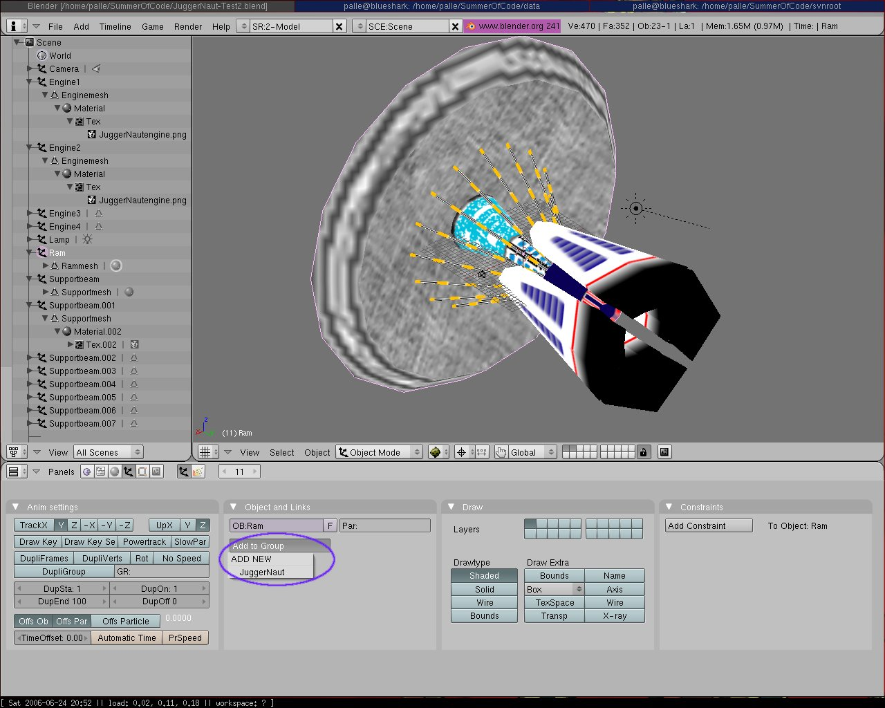
Assume you're sitting with a model containing a number of Objects. To have the exporter treat this as a single, static model, you have to make all the Objects members of a Group. The exporter will then export any Groups as single meshes.
Select an Object, go to the Object Panel (F7), choose "Add to Group" and "ADD NEW". Then you can continue grouping all the Objects under the newly created Group.
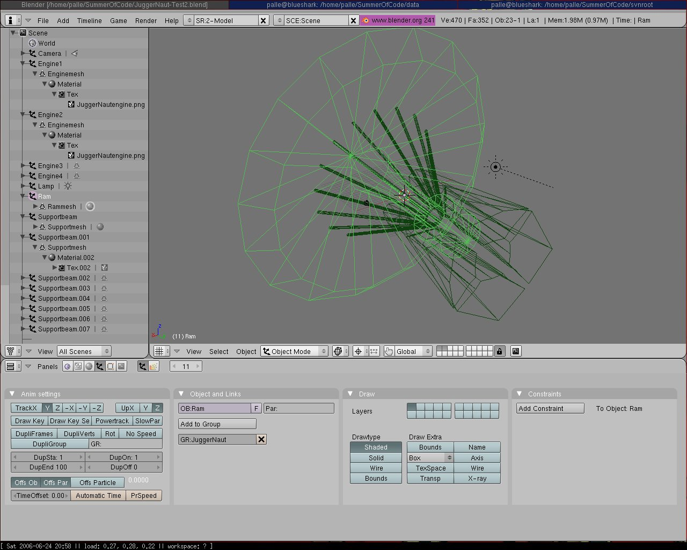
Any Grouped Objects will be presented with green edges in Blender.
Level Creation
Level creation is also relatively easy, and allows for some very neat features.
First. The way Scenes, Objects and Meshes maps to PySoy is pretty intuitive. I.e.: Scene - Node (to be used for root node in a PySoy scene), Object - Entity, Mesh - Mesh.
This means you can just start modelling your level as you want it right away. But there are more to it than just these three abstractions. First of all, you should be familiar with the concept of sharing meshes between objects. This is very useful, and this concept also transfers cleanly to PySoy. If you aren't up to speed on this, here's a quick two-shots course:
Shared Meshes
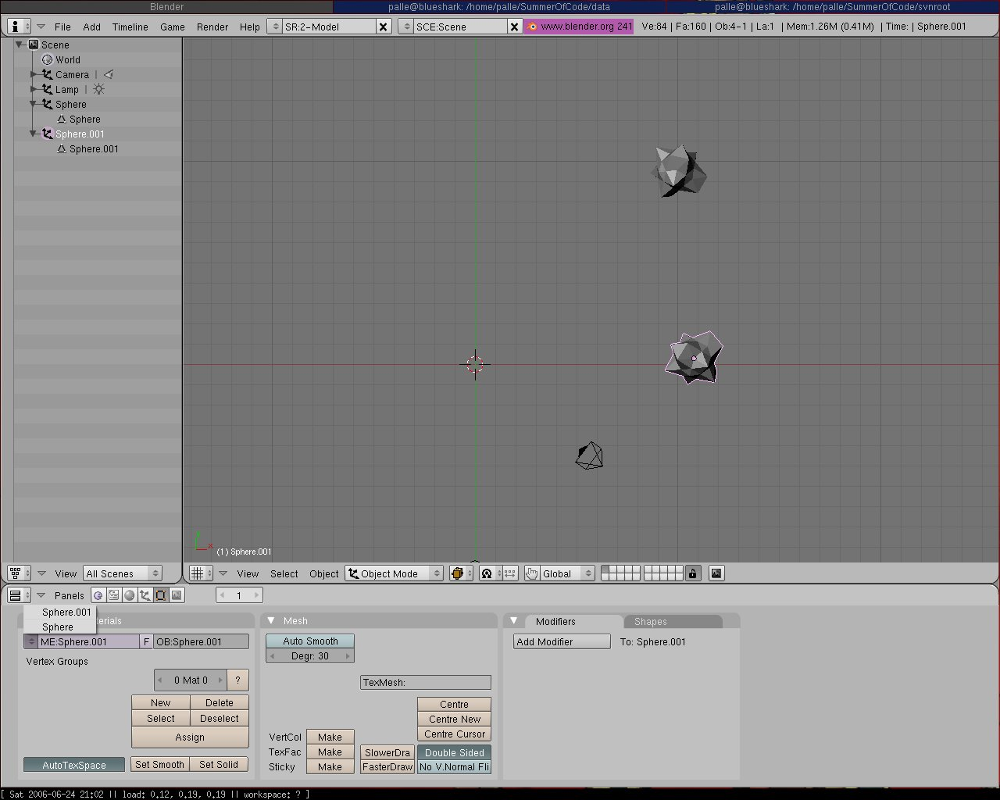
Create a few objects and model one of them as a rock, for instance. Then you can select one of the other objects, and in the Editing Panel (F9) under Link and Materials, you can assign the other Object's Mesh instead.
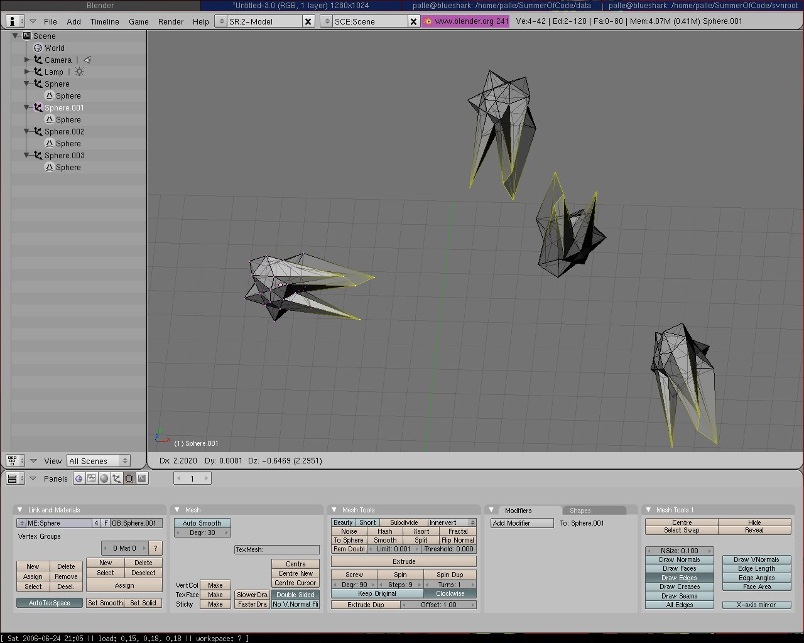
This means that if you edit the Mesh of one of the Objects, the rest follow suit. You can still scale, move and rotate on the object level, though.
The Node abstraction
It was decided to use the Parent/Child concept for for Node creation. This means that by parenting Objects to other Objects, you are effectively creating Nodes.
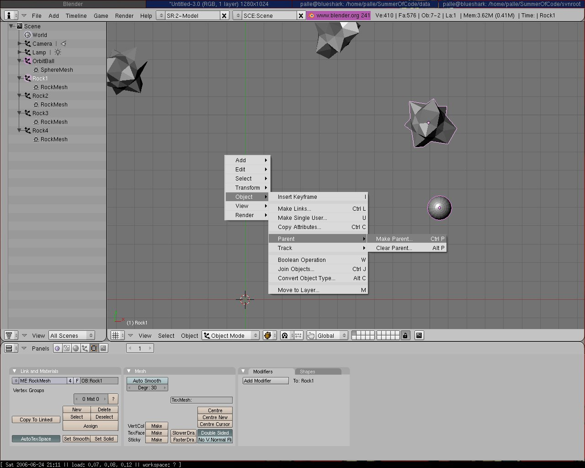
Parenting is a simple process. Just select the Object(s) you want to be childs (holding shift), and end your selection spree with the one that should be their parent. Then use Ctrl+P.
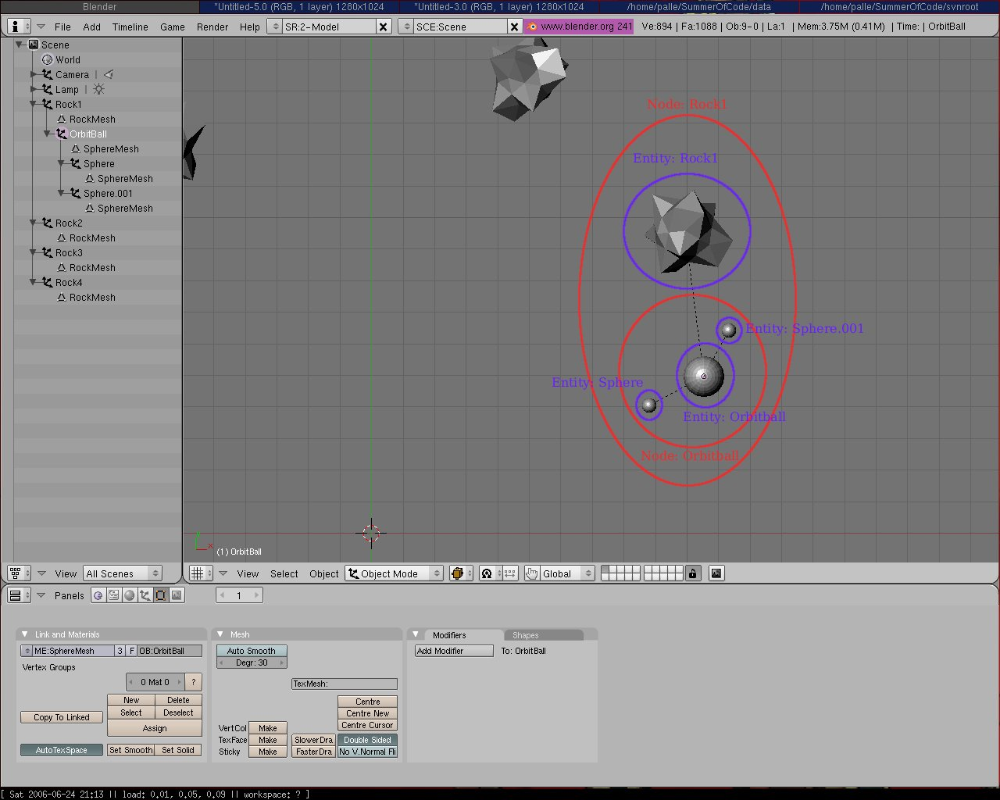
Unfortunately the parent/child concept doesn't transfer 100% cleanly to the Node/Entity abstraction. See the shot above. When a parent is discovered by the exporter, it creates a new Node, puts in the parent at (0, 0) at that Node, and makes the rest of the parents children part of the Node. It should still be fairly intuitive, though.
Shared single models and Group instantiation
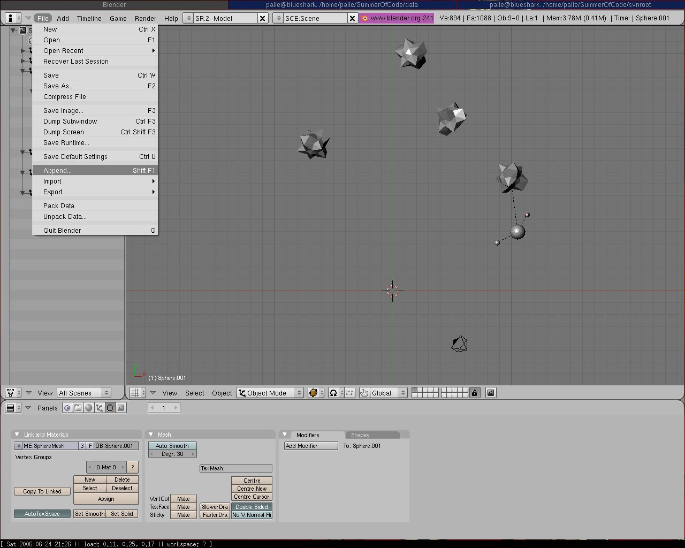
Previously, we created a model, grouped it, and stored it in its own, separate file. Now we want to use this Grouped model in the level. The first step is linking in the Group itself. Choose Append (Shift+F1).
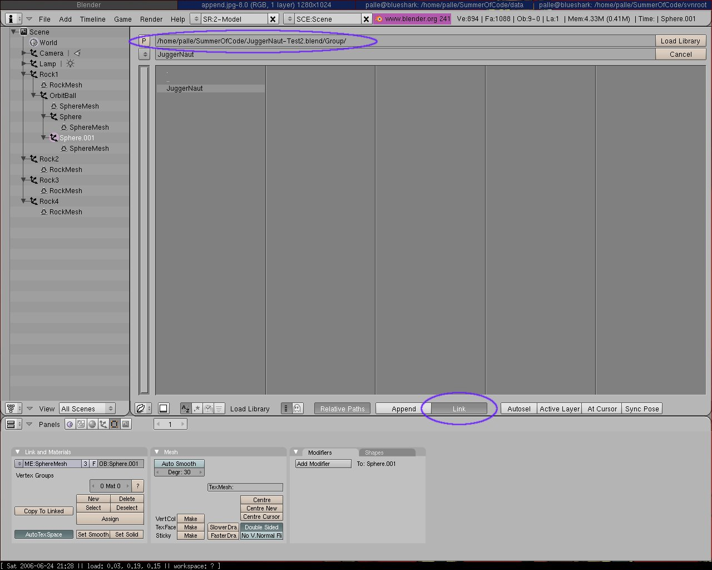
Now find the .blend file you want to link your model in from. Make sure you use "Link" and not actually "Append". "Append" will just create a copy of the Group, and that may not be desirable in this context. When you choose the .blend file, you get a list of element types from that file. Choose Group, and then the Group you want to link in.
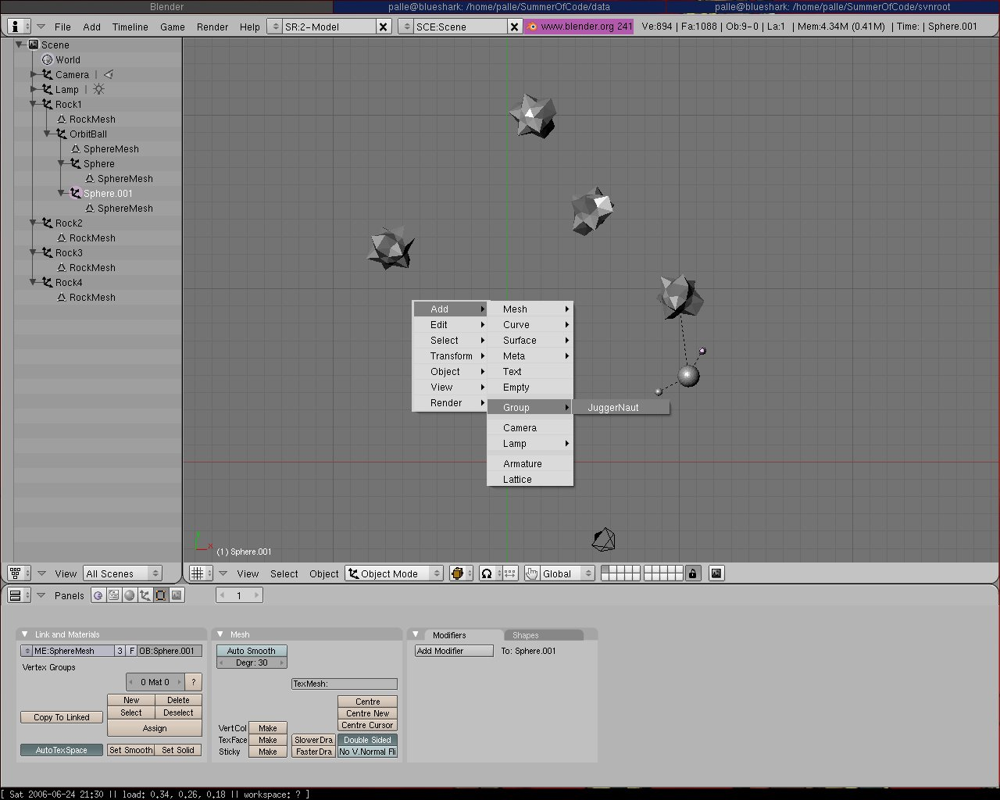
Now you can instantiate your Group in the Add-Group menu. This can be done any number of times. And then, every time you change the source model, all the instances will change with it. Furthermore, a level export will detect all group instances, and will only export them as Entities, linking to a Mesh with the Groups name. This means that first, you need to export the original Groups as single model Meshes first. But then, if you want to change one of these models, you wont ever need to reexport an entire level.
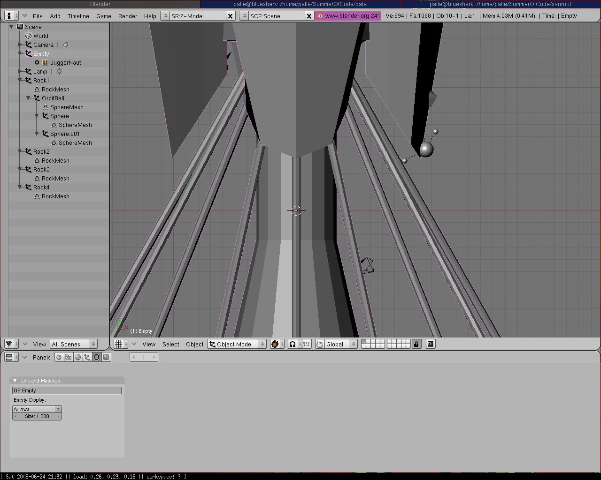
So, the model has been linked in. Granted, you really _should_ check the relative size of your model _before_ you use it, but hey, whatever. Group instances are packed in an "Empty" Object of their own. Therefore, it is possible to change the scale, rotation and placement of the model.
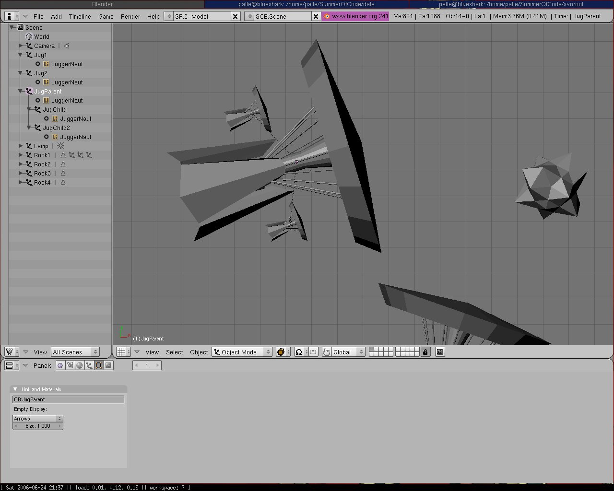
This also means that you can treat them as any other Object, and make them part of a parent/child structure as well.
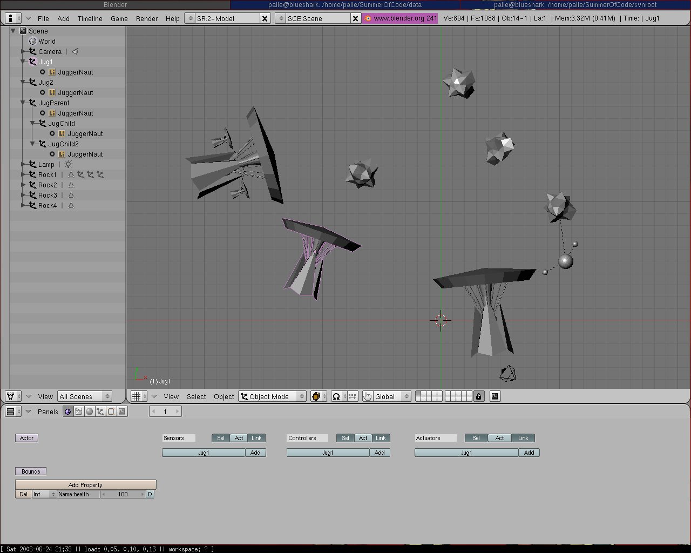
And finally, you can also assign Properties to each Object. These will be carried into the game. This can be done under the Logic Panel (F4).